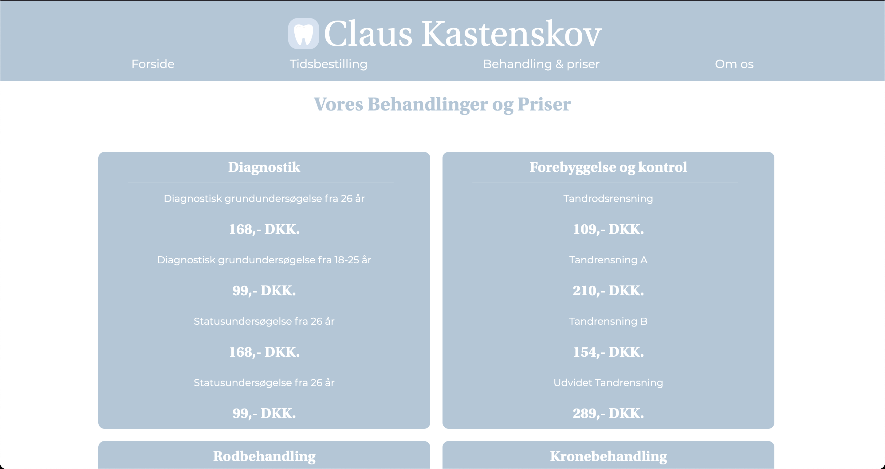
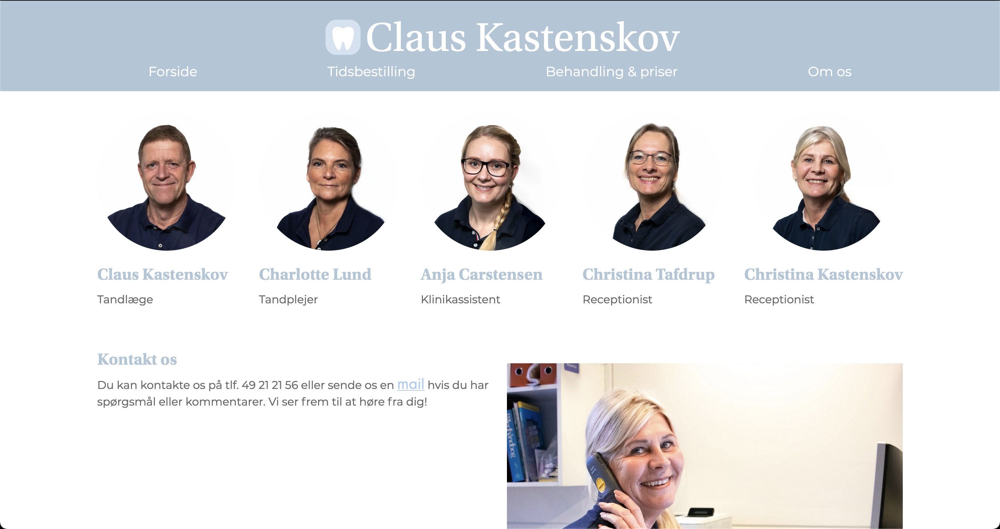
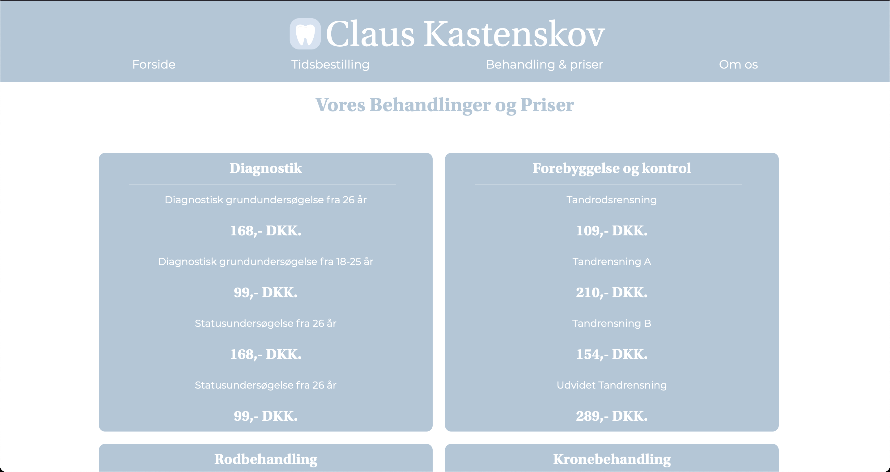
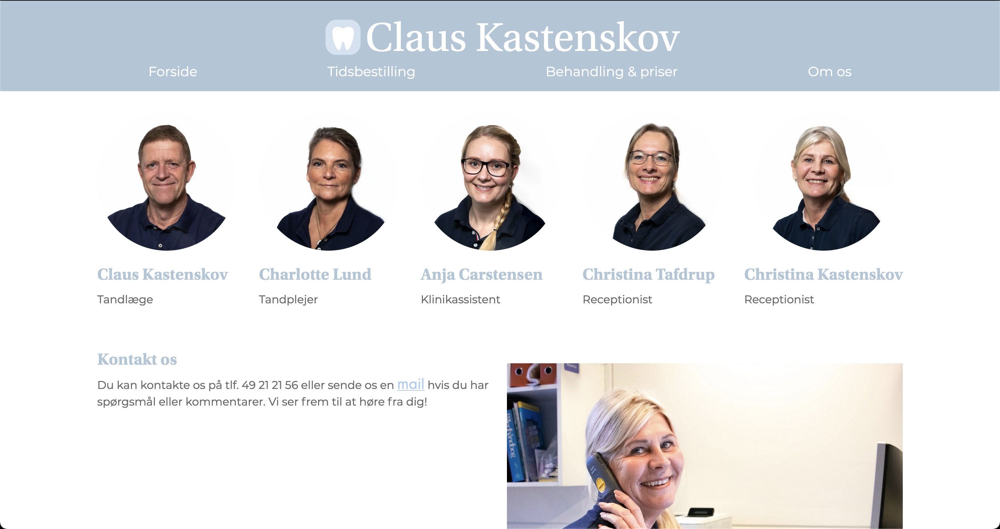

Grundlæggende Content
I det sidste tema på 1. semester, Grundlæggende Indhold, fik vi først til opgave at producere en pilot-video om en person og deres passion. I den forbindelse, blev vi introduceret til adobe Premiere Pro, som er et videoredigeringsprogram der ofte bliver brugt til større produktioner, såsom spillefilm og reklamefilm. For at løse opgaven, skulle vi igennem et forberedelsesforløb, hvor vi b.la. lavede storyboard og interviewguide. Storyboard bliver brugt til at skitsere, shot for shot, hvordan ens film skal optages og hvilken billedbeskæring, komposition og kameraføring der skal benyttes. Senere i temaet fik vi til opgave at redesigne en ny hjemmeside til en eksisterende virksomhed. På hjemmesiden skulle vi b.la. producere nye billeder og video. Her kunne vi benytte den viden og de kompetencer vi havde fået tidligere i pilot-projektet. For at kunne redesigne en hel hjemmeside blev vi delt op i grupper og blev introduceret til SCRUM, samt Trello. I forbindelse med SCRUM, skulle der udvælges en scrummaster. Denne opgave fik jeg pådraget og skulle hermed holde styr på trelloboardet og sørge for at der blev afholdt daily scrum meetings. Trello er en digital opslagstavle, som gør det nemmere at overskue hvilke tasks (mindre opgaver) der skal løses eller er blevet løst, så man ikke ender med at lave det samme. I løbet af projektet blev vi også introduceret til forskellige, nye testmetoder. Heriblandt, Lighthouse test, BERT, Heuristisk test og 5-sek-test. Lighthouse test er et værktøj, som er en del af inspektoren i en browser. Den måler på b.la. om hvor godt hjemmesiden overholder diverse UX-konventioner, såsom kontraster, og hvor man evt. kan optimere hjemmesidens hastighed. BERT er en form for survey der stiller flere poler op mod hinanden – f.eks. lys overfor mørk eller professionel overfor uprofessionel. I den forbindelse, deler man en prototype af sin hjemmeside med flere testpersoner og beder folk om at svare hvad de føler hjemmesiden udstråler. Herefter sammenligner man med sin egen eller virksomhedens opfattelse af hjemmesiden og kan på den måde se hvor der skal optimeres for at nå sit ønskede resultat. For at flere kunne kode på samme projekt, blev vi introduceret til GitHub, som gemmer ændringer i koden i skyen og gør det muligt for andre at hente ned og redigere i. Min pilot-video samt video til den redesignede hjemmeside kan ses nedenfor. Den endelig redesignede hjemmeside kan ses her.

 


